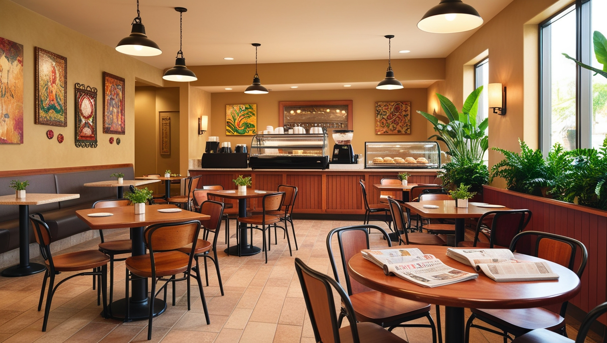
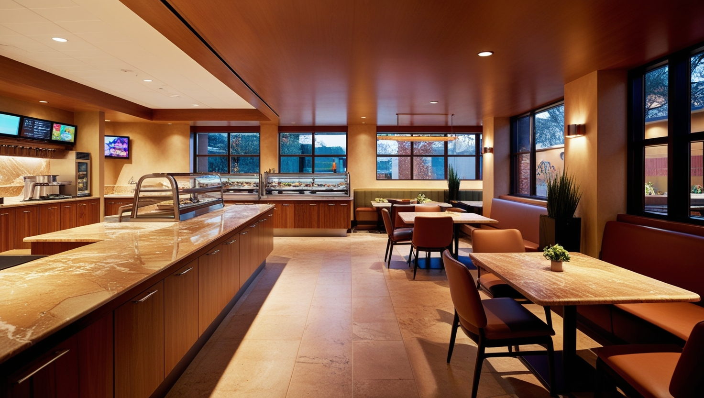
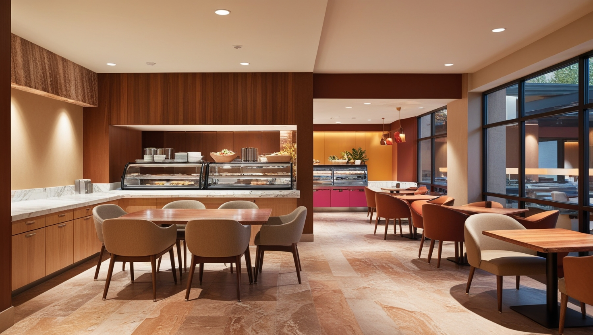
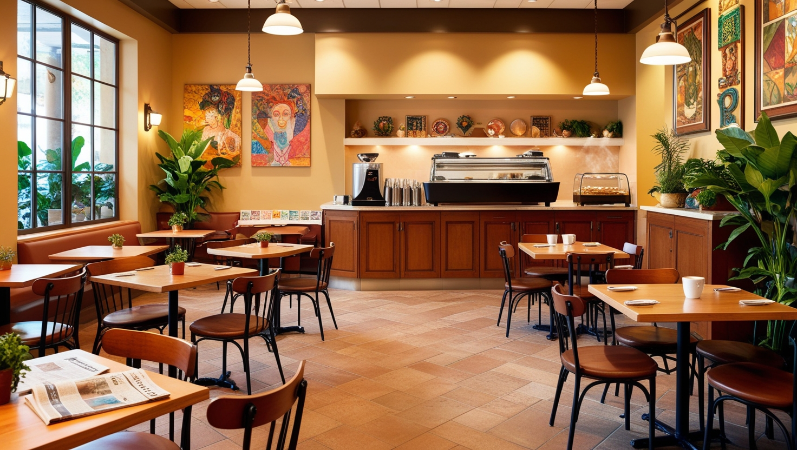
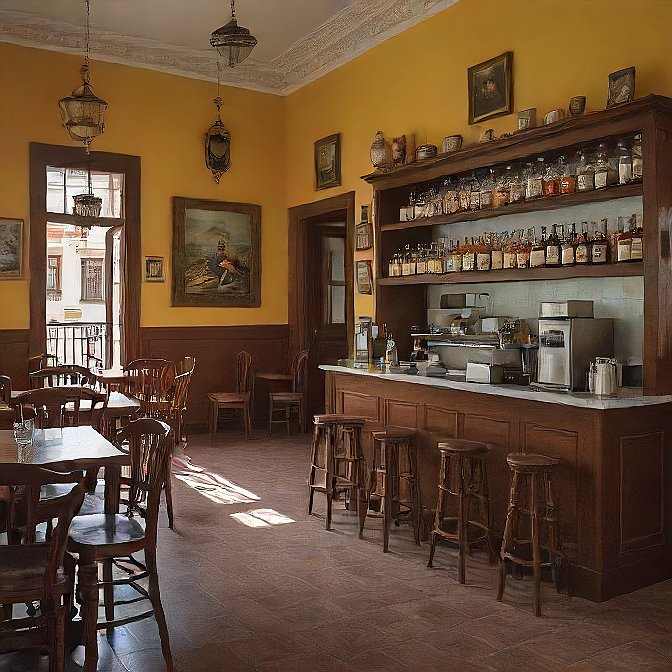

NUESTRA HISTORIA
The Little Coffe nació como un sueño, un deseo de superación, el 11 de noviembre del año 2019 se cumplió ese sueño, en poco menos de 4 años hemos obtenido grandes logros, nuestro equipo lleno de energía y amor por lo que hace, se esfuerza día a día para crear esa atmósfera cálida y cercana. Queremos que cada persona que cruce la puerta sienta que está en su segunda casa, un lugar donde las pequeñas cosas importan.

VISIÓN
En The Little Coffee, nuestra visión es ser más que una simple cafetería: aspiramos a ser un refugio de calidez y conexión en medio de la vida cotidiana. Imaginamos un lugar donde cada taza de café no solo satisface el paladar, sino que también nutre el alma, fomentando momentos de encuentro y reflexión. Queremos que cada cliente sienta que ha encontrado un rincón especial en el que puede desconectar, disfrutar y conectar con los demás. Buscamos crear una comunidad vibrante y acogedora, donde los pequeños gestos y detalles marcan la diferencia, y cada visita se convierte en una experiencia memorable.

MISIÓN
En The Little Coffee, nuestra misión es ofrecer una experiencia única a través de un café excepcional y un ambiente acogedor. Nos comprometemos a preparar cada taza con dedicación, utilizando ingredientes de la mejor calidad para brindar momentos de disfrute y conexión auténtica. Buscamos crear un espacio donde nuestros clientes se sientan como en casa, donde cada visita sea una oportunidad para relajarse, compartir y celebrar los pequeños placeres de la vida. Nuestra misión es ser un punto de encuentro en la comunidad, un lugar donde los detalles importan y cada sonrisa cuenta.

PRINCIPIOS
En The Little Coffee, nos guiamos por principios de calidad y autenticidad, seleccionando los mejores ingredientes para ofrecer una experiencia auténtica y deliciosa. Creamos un ambiente cálido y cercano, donde cada cliente se sienta bienvenido y valorado. Fomentamos la conexión humana, adoptamos prácticas sostenibles y apoyamos a proveedores éticos. Además, buscamos siempre innovar y sorprender a nuestros clientes, manteniendo la experiencia fresca y emocionante en cada visita.

OBJETIVOS
En The Little Coffee, nuestros objetivos son proporcionar una experiencia de café excepcional que deleite a nuestros clientes en cada visita, fomentar un ambiente acogedor y amistoso donde todos se sientan como en casa, y contribuir positivamente a nuestra comunidad mediante prácticas sostenibles y responsables. Nos esforzamos por mantener un alto estándar de calidad, innovar continuamente en nuestros productos y servicios, y construir relaciones duraderas con nuestros clientes y proveedores. Nuestra meta es ser un punto de encuentro apreciado y confiable, donde cada taza de café inspire y conecte a las personas.

VALORES
En The Little Coffee, nuestros valores fundamentales son la calidad, la calidez, la integridad, la sostenibilidad y la creatividad. Nos comprometemos a ofrecer productos excepcionales con ingredientes frescos, creando un ambiente acogedor y amigable. Operamos con honestidad y transparencia, adoptamos prácticas sostenibles para proteger el medio ambiente, y fomentamos la innovación para sorprender a nuestros clientes. Estos valores guían cada aspecto de nuestra cafetería, asegurando experiencias memorables y significativas en cada visita.